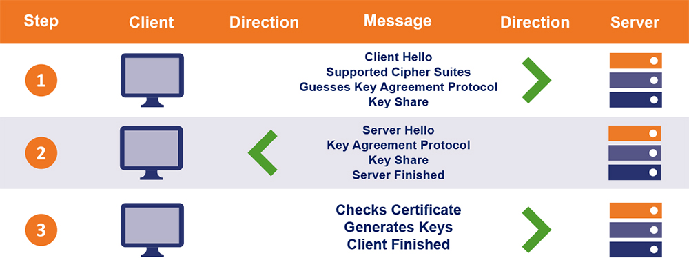

Szyfrowanie asynchroniczne
 © preveil.com
© preveil.com
© 2008 Royal Institution Christmas Lectures
Przykładowe algorytmy
- Diffie-Hellmana
- SSL/TLS handshake
SSL to nie tylko kłódka
Potwierdzenie autentyczności
Zaufane centra autoryzacyjne
Szyfrujemy również:
- e-maile
- komunikatory
- rozmowy
- płatności
Typy poświadczeń
(DV) Domain Validation
- na podstawie e-maila
- na podstawie rekordu DNS
- na podstawie pliku "well known"
(OV) Organization Validation
- na podstawie danych organizacji
- na podstawie danych w rejestrach rządowych
(EV) Extended Validation
- umowy prawne
- rejestry rządowe
- fizyczna lokalizacja (telefon)
- rekord WHOIS
SSL czy jednak TLS?
Oś czasu
© Networkdatapedia.com
SSL 3.1 === TLS 1.0
SSL 3.0 Poodle attack (2011)
SSL/TLS Handshake
<= TLS 1.2 Handshake
TLS 1.3 Handshake
 © thesslstore.comDNS record - Certification Authority Authorization
allow.com. IN CAA 0 issue "ca.example.net"
disallow-all.com. IN CAA 0 issue ";"
report-request.com. IN CAA 0 iodef "mailto:security@example.com"
report-request.com. IN CAA 0 iodef "http://iodef.example.com/"
DNS Certification Authority Authorization
OCSP - Online Certificate Status Protocol
Online Certificate Status ProtocolLet's Encrypt
ACME Protocol
How works ACME protocolPrivate certification authorities
Przykłady:
- klucze VPN
- karty PKI
- tokeny RSA
- urządzenia dostępowe
Podsumowanie
Plusy
- Function-as-a-service
- Event-driven invocations
- Płatność za każde wywołanie
- Przezroczyste skalowanie
- Mniej ludzkich zasobów przeznaczonych na infrastrukturę
Minusy
- vendor lock-in
- próg wejścia
- przeznaczone raczej do szybkich zadań
Pytania?
Dzięki za poświęcony czas!
Slajdy są dostępne na
https://michailw.github.io/talks/ssl/pl/
 /in/wojtowiczmichal
/in/wojtowiczmichal kontakt@indacloud.pl
kontakt@indacloud.pl